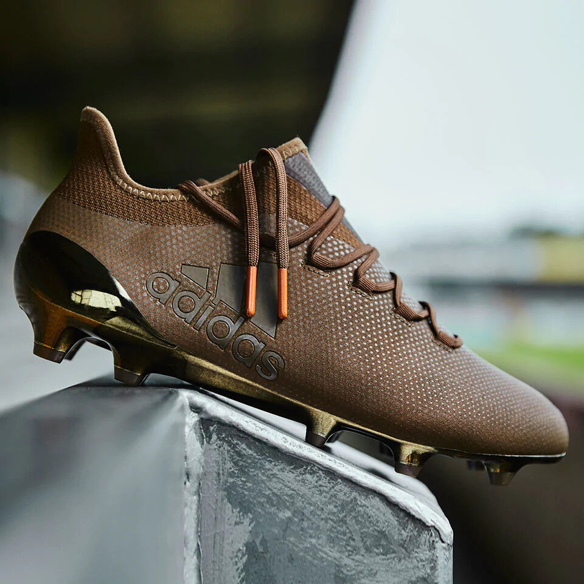
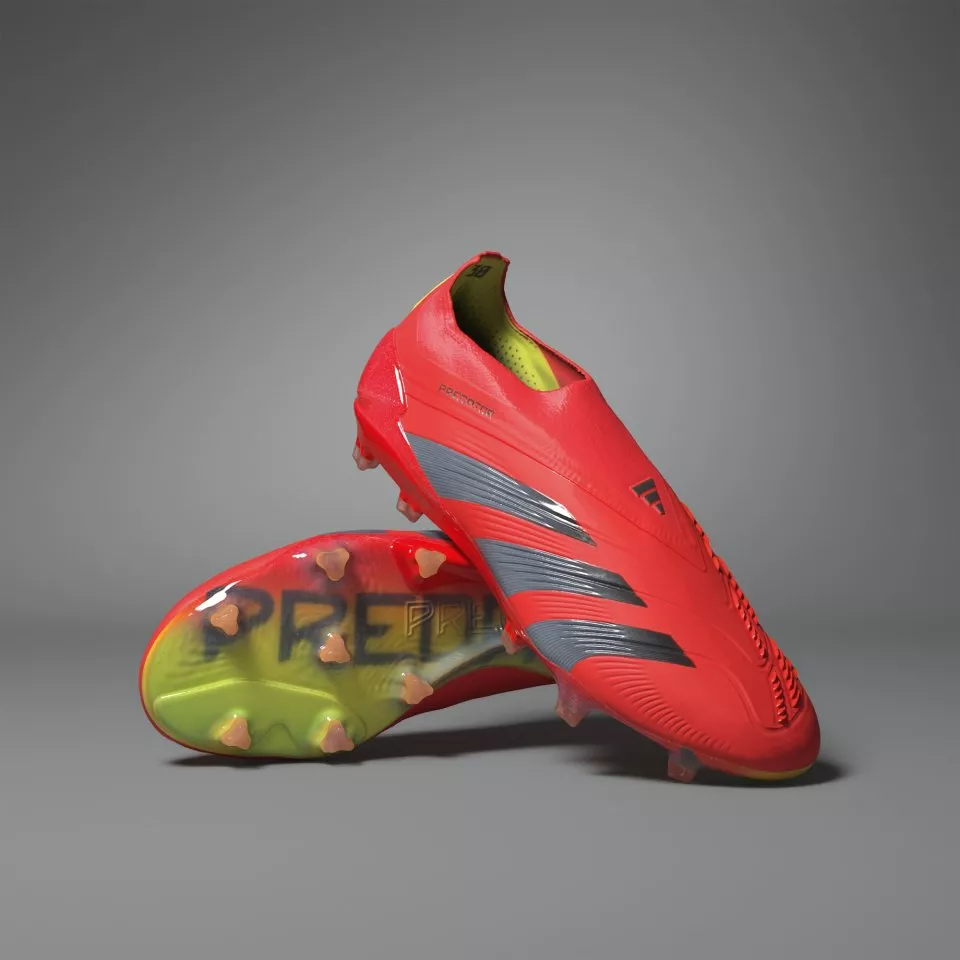

Adidas
Adidas has produced several highly regarded boots across various sports, particularly in soccer (football). Here are three of the best Adidas boots based on their popularity, performance, and technology:
Adidas Predator
The Predator series has been a staple in Adidas' lineup for years, known for its focus on control and power. The Predator Freak+ features innovative Demonskin technology, which consists of rubber spikes on the upper to enhance ball control and spin. It also incorporates a Primeknit upper for a comfortable, sock-like fit and a responsive outsole for agility.
Adidas Copa Sense+

The Copa series is renowned for its classic design and premium leather construction, providing exceptional touch and comfort. The Copa Sense+ introduces new innovations such as Touchpods on the upper for improved control and Touchpods placed strategically around the boot to enhance ball touch. It also features a Fusion Skin upper for a soft, adaptive feel.
Adidas X Ghosted+

Designed for speed and agility, the X Ghosted+ features a lightweight construction and a streamlined silhouette. It utilizes a Mirageskin upper for minimal weight and maximum responsiveness, allowing players to accelerate quickly and make sharp cuts. The Carbitex Speedframe outsole further enhances agility and traction on the field.